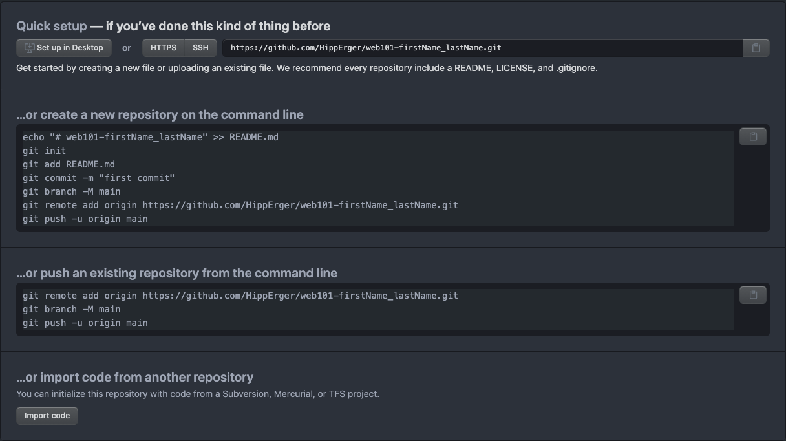
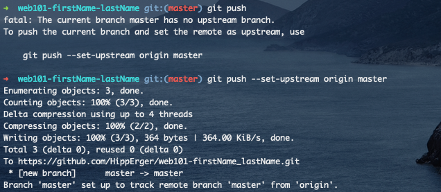
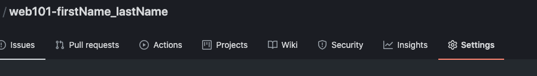
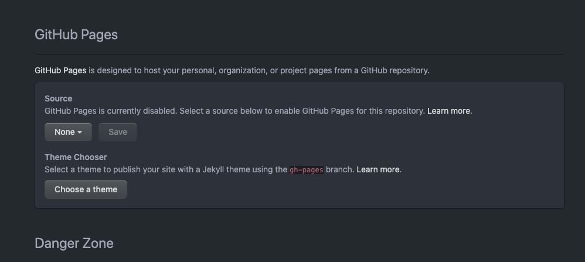
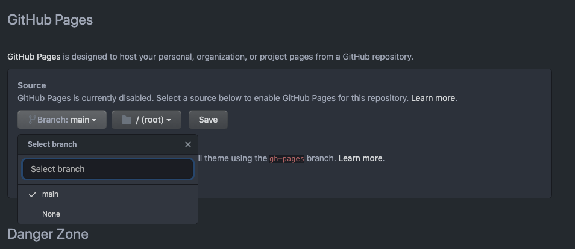
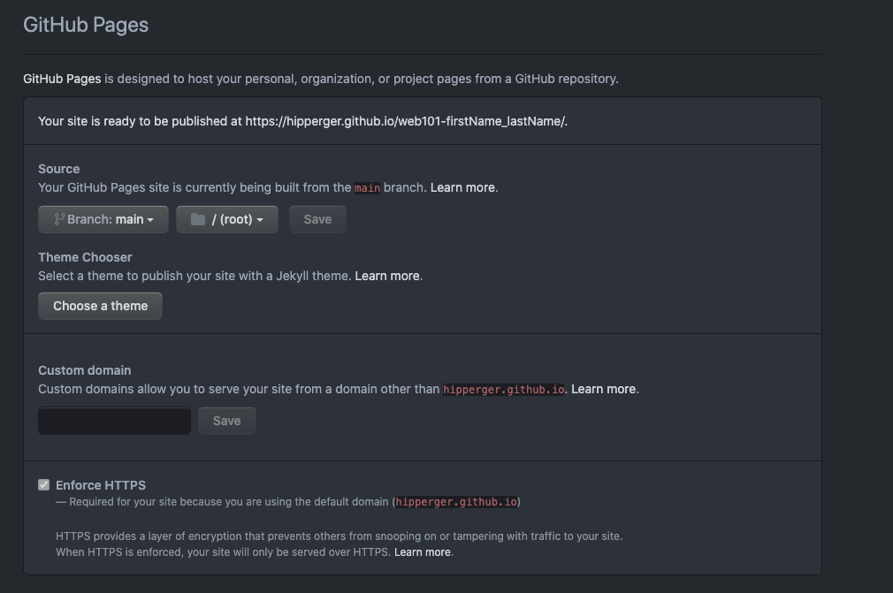
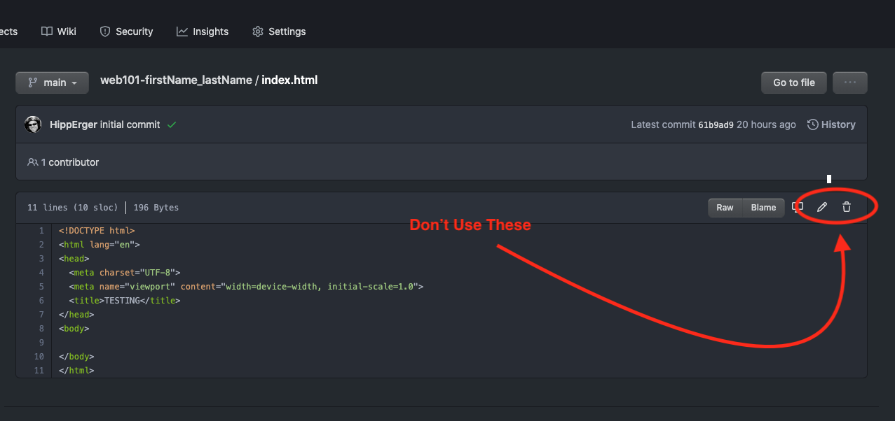
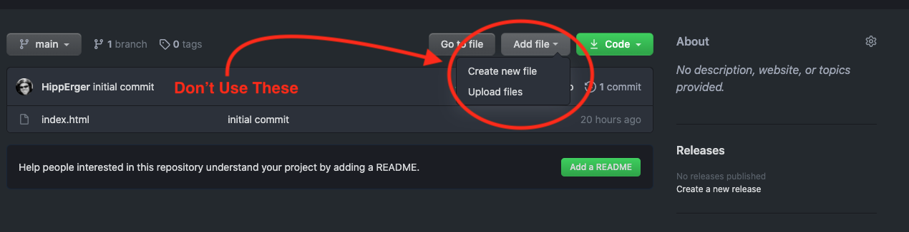

Class One: Hosting Your Landing Pag
Greet, Outline, and Objectify
Today we're going to:
OBJECTIVE: Review previous knowledge and engage on a deeper level. Ask why do we need to do these things?.
- Intro of Instructor + Staff - 15 mins
- Student Intros - 30 mins
- Welcome to the class space with quick tour - 3 mins
- Questions for Student Led Discussion
- Account Setup/Check-In - 20 mins
- Downloads Review - 10 mins
- Creation Time
- Host Your Landing Page - 45 mins
- Exit Recap, Attendance, and Reminders
- Learning Structure and Expectations - 10 mins
- What's next? - 2 mins
Intros
-
Intro of Instructor:
- Who you are?
- What you do for full-time employment?
- Why you teach?
- How you like to work within the class and the expectations you have for students?
-
Intro to:
- the school,
- Why it was created?
- What we do?
- How we do it?
- the program and what you'll learn in it,
- Why - We teach to industry standards while meeting students where they are by ramping their learning curves
- What - Full-stack web development
- How - Flipped classroom, student owns their learning with the guidance on classroom facilitation as a small piece of everything they learn.
- this course and what we'll learn during it,
- Front-end web development
- Minimal programming but lots of interaction with websites
- the textbook and how to navigate it
- There are always Pre-Class Lessons (homework) to complete.
- Look ahead into each class and write down your questions to be asked during class.
- the school,
-
Intro of support staff: Campus Director and Tutor(s) + Tutor Page
- invitation to RocketChat or email anytime
- set up tutoring sessions
- important: come to tutoring sessions on the weekends
Ice Breaker
- 3 mins - Look across the table and find a classmate, someone that is interested in the same career as you and ask them the following questions to get to know them:
- What's your name?
- What do you currently do?
- Why do you want to get into Web Development?
- What do you like to do to exercise your mind?
- 3 mins - Now turn to your left or right and find another aspiring developer. Ask them these questions:
- What's your name?
- Have you always lived in Austin? Where?
- What do you know about the tech world?
- Do you have any pets? Species? Names?
- 3 mins - Now turn the opposite way and find another collaborator. Ask them these questions:
- What's your name?
- Tell me about an interesting book or article you've read lately?
- What do you think about when you watch the stars?
- What is a dream of yours you are willing to work toward and figure out how to bring it to fruition?
- 3 mins - Last time, get up and walk to the other side of the classroom to find a different colleague to ask them these questions:
- What's your name?
- What's your Zodiac sign?
- What daily self-care methods do you practice to maintain good health?
- What is a fear you have about this course?
- How do you plan to overcome it?
- 15 mins - Show-And-Tell, Finally, stop where you are, turn toward the rest of the class, and as you feel the need, raise your hand to introduce your new (last/most recent) friend to the class. Example:
"Hello, my friend, James, is a Libra, born Oct 15th. He says that journaling, drinking water, and running help him sleep soundly and have bright useful days. He's nervous that he doesn't know computers well enough but he thinks if he keeps reading, breathing, and resting his mind he can stay focused on the marathon and not just the dash!"
Everyone should introduce their new friend.
Now that we know each other let's sit down and get to work!
Questions for Student Led Discussion, 35 mins
Questions to prompt discussion
Accounts, Downloads, and Git Software Check-In, 30 minutes
In this section we'll take things step at a time with time to slow down and get help, we'll call them Pause and Partner where students that were successful in the steps will partner with students that weren't to help them through any troubles. This will help conserve class time so your instructor can teach thing everyone needs to learn.
We'll be using these two programs tonight and for the rest of class. If you didn't get both of them downloaded and opened up, ask your new friends if they did so they can help you out.
-
The IDE: Visual Studio Code
- Plus the extension: Live-Server
-
The version control software: Git
- For Windows:
- How To Install Git on Windows
- Install Git
- For Mac:
- Install HomeBrew -
/bin/bash -c "$(curl -fsSL https://raw.githubusercontent.com/Homebrew/install/HEAD/install.sh)" - Install Git -
brew install git
NOTE: (There is no icon for this program, just go to your terminal/shell/commandPrompt/bash and type git + ENTER)
Pause and Partner: Did anyone NOT get these downloaded? Did anyone not get them opened? Partner up and help each other.
Create a Repo on GitHub
- First, Sign-in to GitHub. At the top-right of the screen click on the "+" icon and select "New Repository"
-
In the "Repository Name" field type: web101_firstName_lastName
NOTE: remember to change firstName for your actual first name and lastName for your actual last name.
-
In the "Description field" type: "This is my portfolio website!"
- Make it "Public" by clicking the radio button next to Public. So your instructor can view it.
-
Check the box to "Initialize this repository with a README.md"
NOTE: This is a file we'll use later on and you'll understand why it's important to use later on.
-
Click "Create Repository". After this you should see a screen that looks like this:

-
Find your Portfolio Folder in the terminal by either:
- dragging and dropping the folder in the terminal
- Use the command
cdto change directories until you're inside the folder.
-
Type
pwdto confirm your in the correct folder. -
Then use these commands one after another. They're modified a little from the image above.
git init- this will initialize the folder as a folder for the git software to watch.git add -A- this adds all the files you created for your Portfolio Landing Page.git commit -m "first commit"- This stages your new files to be added to the remote remote, you're "committing" to the changes.git branch -M main- GitHub recently changed the name of the "main" branch frommastertomain. This command ensure you're usingmainas your "main" branch.git remote add origin https://github.com/YOUR-USERNAME/web101-firstName_lastName.git- Attaches the remote repo to this local folder.NOTE: be sure you replace the link wit the link given to YOU from gitHub.
git push -u origin main- pushes your committed files up to the remote repo.
-
Watch the progress in your terminal then refresh the tab with your GitHub Repo to see if the files are there. In your terminal you're looking for feedback that looks like this:

Pause and Partner:
- What problems have you encountered?
- Is there anyone that was rejected by GitHub? Password? Username?
- Let's partner up according to our problems and help each other get through them! Who's successful and who is struggling?
- Follow-Up Video: Creating a Repo and Using Git
- Is anyone having a trouble
pushing? Maybe your configurations aren't set correctly. See next section: Git Configurations
NOTE: Mac users can learn to setup the
code .path for VS Code in this video.
Git Configurations
When you're pushing code to a repo, Git needs to know who you are so it can sign-in to GitHub. It uses your username/email and password to do this. If you don't setup this configuration, git will populate your email with an address assigned to your computer that doesn't match your account on GitHub.
NOTE: if while doing these steps you'll see a strange looking screen pop up, it might be your computer's default text editor, VIM or VI. Just follow the instructions below and/or watch the video to use it.
Set up Git Config(urations) All Machine Users
-
Set your git username. In your terminal, copy/paste this code and replace YOUR-USERNAME with your GitHub username:
git config --global user.name "YOUR-USERNAME"+ ENTER -
Now, set your email. In your terminal, copy/paste this code and replace YOUR EMAIL with the email you used to create your GitHub account:
git config --global user.email "YOURemail@address.com"+ ENTERNote: If it asks you for a password this is your GitHub account password
VIM/VI - How to Use It
When doing your git config you may see a more unusual window in your terminal. it will have a bunch of ~ or # along the left side. This is a built-in text editor like VS Code but very stripped down. It allows you to change files and write code. For this step you'll be changing your .gitconfig file to contain your username and email.
VIM has two modes: Insert (input text) and Command (move around and do stuff). For now, we really only need to insert text, but you'll need to know how to get in and out of the two different modes.
-
To start the Insert Mode: Press
ito enter Insert mode and pressescto begin Command mode. You'll know which one you're in because "insert" will appear at the bottom of the screen when you enter insert mode. -
While Command Mode is active you navigate around the page with your arrow keys (d-pad). When you need to type in your email or anything else, press
i. You're then free to type in whatever you need. -
In this
.gitconfigfile all lines that begin with#are read as "comments" meaning the computer doesn't read them. Make sure you remove them from the important lines. Ask your instructor. -
When you're finished inserting, press
escto move back to Command mode. Then to exit and save the file type:wq+ ENTER. This simply says to the computer: "I'm about to give you a command(:), write the file(w) then quit the program(q)."NOTE: If you're lost, it's totally fine. VIM is an old relic that's stuck around and become a hipster text editor but really it's there so you can always change files, no matter what!
If you're having trouble: Git Config How-To Video
Pause and Partner: How we doing? Try
git pushing again. Who hasn't been able to push?
Practice It Again: Add A file and Push It
Now that you've configured your git software and learned the status, add, commit, push process, let's practice using git again.
- Create another file in the same directory called:
.gitignore. Then copy/paste this code into that file:
1 2 3 4 5 6 7 8 9 10 11 12 13 14 15 16 17 18 19 20 21 22 23 24 25 26 27 28 29 30 31 32 33 34 35 36 37 38 39 40 41 42 43 44 45 46 47 48 49 50 51 52 53 54 55 56 57 58 59 60 61 | |
NOTE: This step is mainly for Mac users but really all users should know how to use
.gitignorewhich is a file that git software looks for and will ignore whatever you write inside of it. Its good practice to include this file with all projects you do in the future.
-
To move this file up to your remote repo by running these commands in order:
git status- check to see what files you've changed and that you hit "SAVE"git add .gitignore- Adds the changed file to the staging area.git commit -m "to git to ignore certain files"- Commits the file changes with a descriptive message about the changes made.git push- pushes the change from the staging area to the remote repo.
-
Make a note for yourself!! Every time you make substantial changes to your code bases you'll run these commands in this order EVERYTIME!
Pause & Partner: How we doing? Any questions about these four commands? Who didn't get this .gitignore file into their repo?
Serve Your Landing Page
Now that your web page is hosted on a publicly available computer, GitHub's server, you can change the permissions and allow for it to seen by the world!
- Go back to the repo you just created on GitHub then go to the "Settings Tab".

- Under the Settings, scroll down almost to the bottom of the page until you see "GitHub Pages".

- Click the None dropdown and select
mainbranch and then click "Save".

- Now, scroll back down to the "GitHub Pages" section and you'll see a section that says "Your site is ready to be published at
https://yourusername.github.io/." - This is the ROOT of your live site. In order to see your live site, you need to put in the rest of the URL's path.

- Use your browser to navigate to:
https://YOUR-GITHUB-USERNAME.github.io/ACA_web101_FIRSTNAME_LASTNAME/myPortfolio/index.html
NOTE: Do you see how the forward-slashes
/in the URL look the exact same as the path names in our<link/>tags? That's because server-computers hold files the same way your personal computer does and the structure of the directories are the same, i.e. the current path to your portfolio looks like:documents/DevFolder/myPortfolio/index.html. All computers are built the same way and talk the same way.Pause & Partner * Where are we? Is anyone able to see their site live? It can take a few minutes to populate. * Who's lost?
Turning in Your Assignments
Your instructor will show you where and how to turn your assignments in using this live GitHub link as an example.
Important Notes About Git and GitHub
DON'T make changes to your code using the tools on GitHub like editing, deleting, creating, or uploading any files.


Only make changes in your editor (VS Code) and push them up EVERY TIME. No exceptions. If you don't it may cause you some headaches.
Git software is powerful but confusing for beginners. If something goes wrong while using git follow these steps:
- PLEASE DON'T delete your local folder with work in it that is not on GitHub. That is your precious time you are deleting! THIS IS WHY WE KEEP OUR CODE IN A REPO IN THE FIRST PLACE!!
- Check the branch you're on:
git branch - Change branches to see if the code you're looking for is on that branch:
git checkout <NameOfBranch> -
Replace the "broken" folder with a new folder:
- Rename your folder on your computer
web101_firstName_lastNametoweb101_firstName_lastName-broken - Re-clone your repository from GitHub
git clone https://github.com/username/ACA_web101_firstName_lastName.git - Copy over all changed files from
ACA_web101_firstName_lastName-brokenfolder into the newACA_web101_firstName_lastName git add -A- Add all new filesgit status- See greengit commit -m "fixed my mess-up"- to commit the changesgit push origin mainormaster- push your code up to GitHub.- ONLY AFTER you've confirmed that all changes are on GitHub, delete the broken repo folder.
- Rename your folder on your computer
Student Presentation Organization
Knowledge is best when it's learned not taught. In this program instructors and the learning portal guide the student's learning journey but our students own their learning experience. You'll be assigned to teach your classmates specific topics that are related to concepts and techniques being taught throughout the course and program. This process has been proven to deepen student's understanding, boost retention, and strengthen community and interpersonal communication skills.
Let's take some time look over the topics and get prepared for them. Next class we'll organized who and when each person is going for each topic.
List of Student Daily Presentations
Exit Recap, Attendance, and Reminders, 5 mins
- Review Class Structure & Expectations of Students
- Answer the following questions:
- How would you describe programming?
- How would you describe coding?
- What does Clone mean?
- What's a Local Machine?
- What's a Repo?
- Mentally prepare for your presentations.
- Next class we'll be adding an image gallery to your website so make sure you study CSS Grid & Box Model tonight and tomorrow. We'll see you then!